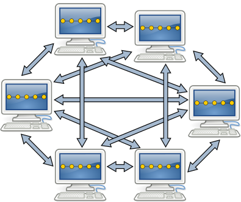
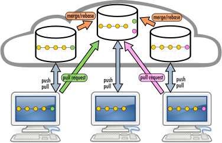

DevOps, basics
Danilo Pianini
Development
- Analysis of a domain
- Design of a solution
- Implementation
- Testing
Operations
- IT infrastructure
- Deployment
- Maintenance
Silo mentality

No silos
DevOps culture
-
Increased collaboration
- Dev and Ops should exchange information and work together
-
Shared responsibility
- A team is responsible for the (sub) product for its whole lifetime
- No handing over projects from devs to ops
-
Autonomous teams
- Lightweight decision making process
-
Focus on the process, not just the product
- Promote small, incremental changes
- Automate as much as possible
- Leverage the right tool for the job at hand
Why bother?
-
Risk management
- Reduce the probability of failure
- Detect defects before hitting the market
- Quickly react to problems
-
Resource exploitation
- Use human resources for human-y work
- Reduce time to market
- Embrace innovation
- Exploit emerging technologies
DevOps
- Principles
- Practices
- Tools
Principles inspire practices
Practices require tools
DevOps principles
(not exhaustive)
- Collaboration
- Reproducibility
- Automation
- Incrementality
- Robustness
DevOps practices
- Workflow organization $\Leftarrow$ today’s focus!
- Build automation
- Self-testing code
- Code quality control
- Continuous Integration
- Continuous Delivery
- Continuous Deployment
- Continuous Monitoring
Build automation
The process of creating tested deployable software artifacts
from source code
May include, depending on the system specifics:
- Source code manipulation and generation
- Source code quality assurance
- Dependency management
- Compilation, linking
- Binary manipulation
- Test execution
- Test quality assurance (e.g., coverage)
- API documentation
- Packaging
- Delivery
with no human intervention
Build automation
- In principle, the lifecycle could be executed manually
- In reality time is precious and repetitivy is boring
$\Rightarrow$ Create software that automates the building of some software!
Dependency management
- Any software depends on other software
- The runtime environment
- The core libraries
- Possibly third-party libraries
- Possibly external resources
- Normally, this software depends on other software
- That depends on other software
- That depends on other software
- That depends on other software, and so on…
- That depends on other software
- That depends on other software
- A normal applications has a tree of dependencies
Simple example: rate a movie
Example requirements:
- Visit IMDb.org and rottentomatoes (Movie databases)
- Search for a title of a movie or series (e.g., Breaking Bad)
- Print all available information (director, year, ratings, …)
The trick: using a few libraries
- Jooq Jooλ
- Unchecked lambda functions
- A library for OMDB
- Queries OMDB given a valid API key, hiding HTTP, communication, and parsing
- SLF4J + Logback
- Logging for Java
Actual dependency tree
+--- com.omertron:API-OMDB:1.5
| +--- commons-codec:commons-codec:1.10
| +--- org.apache.commons:commons-lang3:3.4
| +--- com.fasterxml.jackson.core:jackson-core:2.8.7
| +--- com.fasterxml.jackson.core:jackson-annotations:2.8.7
| +--- com.fasterxml.jackson.core:jackson-databind:2.8.7
| | +--- com.fasterxml.jackson.core:jackson-annotations:2.8.0 -> 2.8.7
| | \--- com.fasterxml.jackson.core:jackson-core:2.8.7
| +--- org.slf4j:slf4j-api:1.7.24 -> 1.7.36
| \--- org.yamj:api-common:2.1
| +--- org.apache.httpcomponents:httpclient:4.5.3
| | +--- org.apache.httpcomponents:httpcore:4.4.6
| | +--- commons-logging:commons-logging:1.2
| | \--- commons-codec:commons-codec:1.9 -> 1.10
| \--- org.slf4j:slf4j-api:1.7.24 -> 1.7.36
+--- org.jooq:jool:0.9.14
+--- org.slf4j:slf4j-api:1.7.36
\--- ch.qos.logback:logback-classic:1.2.11
+--- ch.qos.logback:logback-core:1.2.11
\--- org.slf4j:slf4j-api:1.7.32 -> 1.7.36
- few direct dependencies
- many transitive dependencies
In large projects, transitive dependencies dominate
Towards a dependency hell
- It’s common for non-toy projects to get past 50 dependencies
- Searching, downloading and verifying compatibility by hand is unbearable
- Version conflicts arise soon
- one of your direct dependencies uses library A at version 1
- another uses library A at version 2
- $\Rightarrow$ transitive dependency conflict on A
- Upgrading by hand requires, time, effort and tons of testing
Dealing with dependencies
Source import
Duplication, more library code than business code, updates almost impossible, inconsistencies, unmaintainable
Binary import
Hard to update, toxic for the VCS
Desiderata
- Declarative specification of libraries and versions
- Automatic retrieval
- Automatic resolution of transitive dependencies
- Dependency scopes
- You may need compile-only, test-only, and runtime-only dependencies
- Customizable software sources
Continuous Integration
The practice of integrating code with a main development line continuously
Verifying that the build remains intact
- Requires build automation to be in place
- Requires testing to be in place
- Pivot point of the DevOps practices
- Historically introduced by the extreme programming (XP) community
- Now widespread in the larger DevOps community
The Integration Hell
- Traditional software development takes several months for “integrating” a couple of years of development
- The longer there is no integrated project, the higher the risk
 $\Rightarrow$
$\Rightarrow$

Microreleases and protoduction
- High frequency integration may lead to high frequency releases
- Possibly, one per commit
- Of course, versioning must be appropriate…
Traditionally, protoduction is jargon for a prototype that ends up in production

|
|
Intensive operations should be elsewhere
- The build process should be rich and fast
- Operations requiring a long time should be automated
- And run somewhere else than devs’ PCs

Continuous integration
Base idea: build a pipeline that runs the QA for every change in the code base
- Test the integration before performing it
- Automate as much as possible
- Release frequently
Continuous integration software
Software that promotes CI practices should:
- Provide clean environments for compilation/testing
- Provide a wide range of environments
- Matching the relevant specifications of the actual targets
- High degree of configurability
- Possibly, declarative configuration
- A notification system to alert about failures or issues
- Support for authentication and deployment to external services
Plenty of integrators on the market
Circle CI, Travis CI, Werker, done.io, Codefresh, Codeship, Bitbucket Pipelines, GitHub Actions, GitLab CI/CD Pipelines, JetBrains TeamCity…
Core concepts
Naming and organization is variable across platforms, but in general:
- One or more pipelines can be associated to events
- For instance, a new change, an update to a feature, or a timeout
- Every pipeline is composed of a sequence of operations
- Every operation could be composed of sequential or parallel sub-operations
- How many hierarchical levels are available depends on the specific platform
- GitHub Actions: workflow $\Rightarrow$ job $\Rightarrow$ step
- Travis CI: build $\Rightarrow$ stage $\Rightarrow$ job $\Rightarrow$ phase
- Execution happens in a fresh system (virtual machine or container)
- Sometimes containers inside virtual machines
A real-world test case
We applied DevOps (and microservice-ification) to an existing software project, measuring some metrics before and after the operation.
- The detailed experience report has been presented at the 37th International Conference on Software Maintenance and Evolution (ICSME 2021)
The target
Maggioli S.p.A
- Multinational, based in Italy
- ~2000 collaborators at the time of writing
- An internal IT/Operations team
- Our target team was composed of five people
sisred (before intervention)
- Client-server stand-alone application
- Delphi front-end, Microsoft SQL Server backend
- Editors (paid by Maggioli) are experts in law entering information on the client
- The information is then exposed into a (paid access) portal with up-to-date legal information
Previous architecture

| Metric | Prev. | Now | Change |
|---|---|---|---|
| Release frequency ($\frac{releases}{day}$) | 0.071 | ||
| Commit to release time (hours) | 8 to 24 | ||
| Commits per day ($\frac{commits}{day}$) | 2 | ||
| MTTR (hours) | 36 | ||
| Prod. env. setup (working hours) | 16 | ||
| Dev. env. setup (minutes) | 120 | ||
| Nightly downtime ($\frac{minutes}{night}$) | 30 | ||
| Support ticket frequency ($\frac{tickets}{month}$) | 40 | ||
| Issue resolution time (days) | 4 |
Microservice-ified architecture

CI Pipeline

| Metric | Prev. | Now | Change |
|---|---|---|---|
| Release frequency ($\frac{releases}{day}$) | 0.071 | 2.7 | +3700% |
| Commit to release time (hours) | 8 to 24 | ||
| Commits per day ($\frac{commits}{day}$) | 2 | ||
| MTTR (hours) | 36 | ||
| Prod. env. setup (working hours) | 16 | ||
| Dev. env. setup (minutes) | 120 | ||
| Nightly downtime ($\frac{minutes}{night}$) | 30 | ||
| Support ticket frequency ($\frac{tickets}{month}$) | 40 | ||
| Issue resolution time (days) | 4 |
| Metric | Prev. | Now | Change |
|---|---|---|---|
| Release frequency ($\frac{releases}{day}$) | 0.071 | 2.7 | +3700% |
| Commit to release time (hours) | 8 to 24 | 0.19 | ~ -98.5% |
| Commits per day ($\frac{commits}{day}$) | 2 | ||
| MTTR (hours) | 36 | ||
| Prod. env. setup (working hours) | 16 | ||
| Dev. env. setup (minutes) | 120 | ||
| Nightly downtime ($\frac{minutes}{night}$) | 30 | ||
| Support ticket frequency ($\frac{tickets}{month}$) | 40 | ||
| Issue resolution time (days) | 4 |
| Metric | Prev. | Now | Change |
|---|---|---|---|
| Release frequency ($\frac{releases}{day}$) | 0.071 | 2.7 | +3700% |
| Commit to release time (hours) | 8 to 24 | 0.19 | ~ -98.5% |
| Commits per day ($\frac{commits}{day}$) | 2 | 7.1 | +255% |
| MTTR (hours) | 36 | ||
| Prod. env. setup (working hours) | 16 | ||
| Dev. env. setup (minutes) | 120 | ||
| Nightly downtime ($\frac{minutes}{night}$) | 30 | ||
| Support ticket frequency ($\frac{tickets}{month}$) | 40 | ||
| Issue resolution time (days) | 4 |
| Metric | Prev. | Now | Change |
|---|---|---|---|
| Release frequency ($\frac{releases}{day}$) | 0.071 | 2.7 | +3700% |
| Commit to release time (hours) | 8 to 24 | 0.19 | ~ -98.5% |
| Commits per day ($\frac{commits}{day}$) | 2 | 7.1 | +255% |
| MTTR (hours) | 36 | 0.5 | -98.6% |
| Prod. env. setup (working hours) | 16 | ||
| Dev. env. setup (minutes) | 120 | ||
| Nightly downtime ($\frac{minutes}{night}$) | 30 | ||
| Support ticket frequency ($\frac{tickets}{month}$) | 40 | ||
| Issue resolution time (days) | 4 |
| Metric | Prev. | Now | Change |
|---|---|---|---|
| Release frequency ($\frac{releases}{day}$) | 0.071 | 2.7 | +3700% |
| Commit to release time (hours) | 8 to 24 | 0.19 | ~ -98.5% |
| Commits per day ($\frac{commits}{day}$) | 2 | 7.1 | +255% |
| MTTR (hours) | 36 | 0.5 | -98.6% |
| Prod. env. setup (working hours) | 16 | 0.35 | -97.8% |
| Dev. env. setup (minutes) | 120 | ||
| Nightly downtime ($\frac{minutes}{night}$) | 30 | ||
| Support ticket frequency ($\frac{tickets}{month}$) | 40 | ||
| Issue resolution time (days) | 4 |
| Metric | Prev. | Now | Change |
|---|---|---|---|
| Release frequency ($\frac{releases}{day}$) | 0.071 | 2.7 | +3700% |
| Commit to release time (hours) | 8 to 24 | 0.19 | ~ -98.5% |
| Commits per day ($\frac{commits}{day}$) | 2 | 7.1 | +255% |
| MTTR (hours) | 36 | 0.5 | -98.6% |
| Prod. env. setup (working hours) | 16 | 0.35 | -97.8% |
| Dev. env. setup (minutes) | 120 | 9 | -92.5% |
| Nightly downtime ($\frac{minutes}{night}$) | 30 | ||
| Support ticket frequency ($\frac{tickets}{month}$) | 40 | ||
| Issue resolution time (days) | 4 |
| Metric | Prev. | Now | Change |
|---|---|---|---|
| Release frequency ($\frac{releases}{day}$) | 0.071 | 2.7 | +3700% |
| Commit to release time (hours) | 8 to 24 | 0.19 | ~ -98.5% |
| Commits per day ($\frac{commits}{day}$) | 2 | 7.1 | +255% |
| MTTR (hours) | 36 | 0.5 | -98.6% |
| Prod. env. setup (working hours) | 16 | 0.35 | -97.8% |
| Dev. env. setup (minutes) | 120 | 9 | -92.5% |
| Nightly downtime ($\frac{minutes}{night}$) | 30 | 0 | -100% |
| Support ticket frequency ($\frac{tickets}{month}$) | 40 | ||
| Issue resolution time (days) | 4 |
| Metric | Prev. | Now | Change |
|---|---|---|---|
| Release frequency ($\frac{releases}{day}$) | 0.071 | 2.7 | +3700% |
| Commit to release time (hours) | 8 to 24 | 0.19 | ~ -98.5% |
| Commits per day ($\frac{commits}{day}$) | 2 | 7.1 | +255% |
| MTTR (hours) | 36 | 0.5 | -98.6% |
| Prod. env. setup (working hours) | 16 | 0.35 | -97.8% |
| Dev. env. setup (minutes) | 120 | 9 | -92.5% |
| Nightly downtime ($\frac{minutes}{night}$) | 30 | 0 | -100% |
| Support ticket frequency ($\frac{tickets}{month}$) | 40 | 19 | -52.5% |
| Issue resolution time (days) | 4 |
| Metric | Prev. | Now | Change |
|---|---|---|---|
| Release frequency ($\frac{releases}{day}$) | 0.071 | 2.7 | +3700% |
| Commit to release time (hours) | 8 to 24 | 0.19 | ~ -98.5% |
| Commits per day ($\frac{commits}{day}$) | 2 | 7.1 | +255% |
| MTTR (hours) | 36 | 0.5 | -98.6% |
| Prod. env. setup (working hours) | 16 | 0.35 | -97.8% |
| Dev. env. setup (minutes) | 120 | 9 | -92.5% |
| Nightly downtime ($\frac{minutes}{night}$) | 30 | 0 | -100% |
| Support ticket frequency ($\frac{tickets}{month}$) | 40 | 19 | -52.5% |
| Issue resolution time (days) | 4 | 3 | -25% |
Benefits
- Much less maintenance in the traditional meaning: “Time spent to keep the system in nominal conditions”
- No more issues with Windows updates
- No more downtimes related to internal network / electricity / public infrastructure maintenance
- Improved security
- No more critical failures caused by testing stored procedures directly in production by mistake
- Much more maintenance in terms of software evolution
- Application (or verification of automatic application) of updates
- Security audits
- Maintenance and update of the pipeline
Lessons learned
- The teams must be autonomous
- Practices must be tailored to the team
- Time-consuming, repetitive, and cumbersome procedures must be automated
- Obsolete practices must be removed
- Communication is key, awareness must be shed across the team of the expected benefits
Timeline

Agile software development
Manifesto
We are uncovering better ways of developing software by doing it and helping others do it. Through this work we have come to value:
- Individuals and interactions over processes and tools
- Working software over comprehensive documentation
- Customer collaboration over contract negotiation
- Responding to change over following a plan
That is, while there is value in the items on the right, we value the items on the left more.
Agile Principles I
(emphasis mine) (comments mine)
-
Our highest priority is to satisfy the customer through early and continuous delivery of valuable software.
-
Welcome changing requirements, even late in development. Agile processes harness change for the customer’s competitive advantage. (Not an excuse for not collecting requirements upfront)
-
Deliver working software frequently, from a couple of weeks to a couple of months, with a preference to the shorter timescale. (Daily, hourly)
-
Business people and developers must work together daily throughout the project. (And understand each other!)
-
Build projects around motivated individuals. Give them the environment and support they need, and trust them to get the job done. (Teams must be independent)
-
The most efficient and effective method of conveying information to and within a development team is face-to-face conversation. (Yes, it is pre-covid stuff)
Agile Principles II
(emphasis mine) (comments mine)
-
Working software is the primary measure of progress. (But if used as the only measure progress, progress will halt soon)
-
Agile processes promote sustainable development. The sponsors, developers, and users should be able to maintain a constant pace indefinitely. (Bureaucracy and maintenance task should not pile up)
-
Continuous attention to technical excellence and good design enhances agility. (First, do it well)
-
Simplicity–the art of maximizing the amount of work not done–is essential. (Also known as KISS)
-
The best architectures, requirements, and designs emerge from self-organizing teams.
-
At regular intervals, the team reflects on how to become more effective, then tunes and adjusts its behavior accordingly. (Or, maybe, continuously…)
Practices vs. Frameworks
Principles get reified into practices
Practices get often interpreted and formalized into frameworks
Framework are actionable, but formalization may introduce assumptions about projects and teams that do not hold always!
Agile principles and practices get often captured into these well-known frameworks, with slightly different focuses and goals:
- Scrum: focus on team structure, roles, responsibilities, procedures
- Kanban: focus on tasks, streamlining, bottleneck mitigation
- XP (Extreme Programming): focus on release frequency
- Feature Driven Development: focus on clients’ requests and satisfaction
- Crystal: focus on self-management of teams
- DSDM (Dynamic Systems Development Method): focus on time and budget constraints
Scrum
Seminal paper from 1986 by Hirotaka Takeuchi and Ikujiro Nonaka:
Then refined to the current framework. The name is from Rugby’s “scrummage”

Scrum key ideas
- Requirements are volatile
- There will be unpredictability along the road
- Accept that the problem may not be fully understood upfront, and focus on quick response to unexpected changes
Scrum workflow
- The development is divided in Sprints
- A Sprint is timeboxed: the length is agreed in advance
- The most commonly adopted length is two weeks
- A Sprint must end with a deliverable advancement
- Each sprint is macro-structured as follows:
- Planning: define the activities of the sprint
- Daily scrums (aka “stand-up meetings”): daily updates on the state of work
- Sprint review: at the of the sprint, present the work to the stakeholders
- At regular intervals a Sprint retrospective is held
- Reason on the past sprints with the goal of continuous improvement
Scrum roles
-
Product owner (PO), Goal: maximimizing ROI
- Tasks: identify the necessary features and prioritize them
- Vision: strategic, similar to a product manager, but understands the product development!
- Interactions: customers, development team, SM
- Responsibilities: coarse-grained, high-level decision on product directions
-
Development team, Goal: make things happen
- Tasks: build the selected features, provide time estimates, provide feedback to the PO
- Vision: tactic, cross-functional (T-shaped, the team can deal with all the aspects of a sub-project)
- Interactions: PO and SM
- Responsibilities: fine-grained, autonomous and hence accountable
-
Scrum master (SM), Goal: coaching and supervision
- Tasks: explain Scrum, supervise its application, help learning the methodology
- Vision: process-oriented, expert in Scrum
- Interactions: PO and development team
- Responsibilities: help the team understand and apply Scrum, no formal responsibility on the product. Optional (if the team is already experienced), often externalized.
Scrum tools
- Product backlog
- A prioritized list of customer-driven features
- Maintained and sorted by the PO
- Each item has an associated size estimation (in arbitrary measure)
- Refined at the conclusion of each sprint
- Sprint backlog
- Refines the product backlog
- Each product backlog item selected for the current sprint gets split into sprint tasks
- Each task has an effort estimation, an assignee, and a progress tracker
- The progress is often tracked by updating the “remaining effort” day by day
- The burn-down chart is a common way to visualize it
Product backlog

Sprint backlog


Key concept: the definition of done
Apparently simple concept that is central for Scrum to work
(and for many other workflows)
Every actor in the process must agree and what is the meaning of a task being considered done
- Is it done when the acceptance tests work?
- Is it done when the assignee marks it as so?
- Is it done when it is delivered to the main application?
- Is it done when it has been in production for at least one week without bug reports?
Process overview

Workflow overview

The problem with Scrum
Scrum and agile are often used as synonyms, but they are not
In the literature, Scrum and agile show mixed evidence of efficacy
(even though, anecdotically, many success stories can be found)
WARNING: opinions!
- From now on, facts are mixed with opinions of practitioners (included myself)
- There will be citations. Please note: many authors of these quotes, although regarded professionals, often use agile and Scrum interchangeably
- We are going to ask ourselves to what doesn’t work, when, and why
- Let’s see if we can find some general guidance…
Waterfall replicates the social model of a dysfunctional organization with a defined hierarchy. Agile, quite often, replicates the social model of a dysfunctional organization without a well-defined hierarchy.
- Michael O. Church: Why “Agile” and especially Scrum are terrible
If your team has combined agile with a legacy methodology such as waterfall, creating a ‘water-scrum’ approach, you may have the worst of both worlds: You have combined the rigid structure of the traditional approach with the terminology of agile.
- Peter Varhol: 8 reasons to ditch agile
Many practice the terminology without appreciating the underlying values.
- Peter Varhol: 8 reasons to ditch agile
I knew the end of Agile was coming when we started using hockey sticks.
- Kurt Cagle on Forbes: The End of Agile
If management is essentially ignoring the developers, there are fixed deadlines to be achieved with a predefined scope, or it’s a dog-eat-dog environment instead of a team focused on achieving the same goal, if planning ahead and thinking out of the box are not appreciated, then yes, eventually you’ll give up and resort to just doing the assigned tasks. I’ve been there.
- From StackOverflow
Standup is effectively “update management”. The notion that standup is for developers is absurd. Does anyone actually wait until 9AM to report a problem or are they going to just ask in the group chat immediately? In practice, it is someone higher up the food chain keeping tabs on how fast things are moving so they can ask about it later in the day.
- Matthew Gaiser on StackOverflow
it usually bends and breaks every other process to it and becomes this overarching process where you do nothing consistently except Scrum rituals and making those Scrum rituals seem successful
- Matthew Gaiser on StackOverflow
What is the root of these issues?
Bureaucratization
- There is a very delicate trade-off between standardization of practices and excess of buraucracy
- Agile is designed around co-located medium/small teams and low buraucracy (compared to the state of the art at the time)
- Larger scale requires more coordination and buraucracy
- Smaller scale benefits of less buraucracy
There is no one-fits-them-all workflow!
Blindly adopting a pre-existing set of practices may lead to failures
Mixing cherry-picked parts of workflows requires a great deal of experience
- It is paramount that everyone understands why some procedure is in place
It’s stupidly, dangerously short-term.
- Michael O. Church: Why “Agile” and especially Scrum are terrible
Two-week delivery schedules are overkill
- Peter Varhol: 8 reasons to ditch agile
What is the root of these issues?
Time boxes
-
Estimating the effort is a good practice.
-
Replacing reality with estimations is not.
-
High-risk/high-gain activities hardly fit into time slots
- (hence the “dangerously short-term”)
Great developers are often sought out for advice and for second opinions. But any time doing that is less time spent churning out tickets, so their velocity falls.
- Matthew Gaiser on StackOverflow
Scrum and infinite defects can be good friends because the infinite defects approach lets velocity be artificially high as long as bugs are found after the sprint and therefore counted as new work. You could have an ever higher velocity by constantly generating new bugs.
- Matthew Gaiser on StackOverflow
Because the developers are independently working away on each ticket sequentially, the architecture rapidly begins to mirror the tickets. The tickets are typically 1-2 sentence user stories. Ticket driven architecture rapidly gets messy simply because more code gets piled on as required.
- Matthew Gaiser on StackOverflow
What is the root of these issues?
Abuse of KPIs
- Measuring is good and must be done
- But keep in mind that measures show a view over a complex system
- Blindly using metrics to measure quality can be perilous
I call this the Whisky Goggles Effect: it turns the 3s and 4s into 5s, but it makes you so sloppy that the 7s and 9s want nothing to do with you. Unable to get their creative juices flowing under a system where everything has to be justified in terms of short-term business value, the best programmers leave.
- Michael O. Church: Why “Agile” and especially Scrum are terrible
[Emphasis mine]
Culturally, agile may threaten some team members, including those who feel they had obtained an informal leadership status under the previous process that disappeared under agile.
- Peter Varhol: 8 reasons to ditch agile
developers who think they are under pressure will do a crappy job in any development methodology
- From StackOverflow
Great developers are usually defined as those who can solve tough problems. Scrum encourages picking work that can easily be done and rapidly churned out at a steady pace. A tough problem is a developer being slow on getting the tickets done.
- Matthew Gaiser on StackOverflow
Teams might self organize if they all have the same goal and incentives. The problem is, that is rarely true. One guy wants a promotion. Another is studying for a degree on the side. A third is upskilling to go to another company. Another just doesn’t want to have arguments so agrees to anything and lets the codebase become a mess. A lot of good design requires the developers to sit down and hash out how a thing should work.
- Matthew Gaiser on StackOverflow
Even if you get a situation where you are not formally judged on the points completed (which will not happen if management is mostly interacting during Scrum rituals as that is all they have to see regarding progress), people are still going to compete for attention and rewards.
- Matthew Gaiser on StackOverflow
Just imagine 11 people being handed a soccer manual and being told practice is every day for fifteen minutes around 10 AM in conference room #5. Do you think that is what makes a good soccer team? But what if those 11 people were really good, professional players? Still no team? No. Even Christiano Ronaldo would be getting “average” sooner or later with that kind of “team”. But that’s not soccer’s fault. It’s just not how you build a team.
- Matthew Gaiser on StackOverflow
What is the root of these issues?
Managing teams is hard
agile alone does not make it easier
- Daily standups may become source of pressure
- especially if management is involved
- autonomy requires trust!
- Changes in consolidated practices have hidden costs
- they challenge a pre-existent stabiity
- and I have no idea how to deal with them
- (well you tell me)
opinion warning below
- Developer quality is not linear
- One insanely good developer can be worth 5 good developers alone
- still they don’t get paid five times as much, and they know it
- One good developer can be worth 5 average developers, and so on
- $\Rightarrow$ flattening towards average is usually damaging
Many practice the terminology without appreciating the underlying values.
- Peter Varhol: 8 reasons to ditch agile
If you really don’t have an agile methodology but call it agile to attract and retain developers and other team members, you are in trouble.
- Peter Varhol: 8 reasons to ditch agile
What is the root of these issues?
Find solid processes, not just a nice packaging
- It is easy to transform agile principles into a set of rituals
- See bureaucratization
- Don’t do Scrum because is cool, do it because:
- you understand it
- you have good reasons to think it will help
- Don’t be fearful of adapting it to the environment
In Scrum, you need to clear tickets and there is no real check on the quality of the work as “done” or “not done” is decided by a usually non-technical project owner. That incentivizes going into a void and focusing on outputting code.
- Matthew Gaiser on StackOverflow
The high level of developer independence means each developer takes different approaches. […] While it is not necessarily wrong, it makes debugging a heck of a lot harder as more places need to be checked.
- Matthew Gaiser on StackOverflow
What is the root of these issues?
Technical excellence
- Working in a persistent emergency state creates technical debt
- Architectures and abstractions are vital for long-term success
- If they get compromised, they need to be recovered
- (which is paying your techical debt)
- There should be consistency across styles and techniques
- And controls should be as much as possible automatic
Knowledge gaps and definition of done
- The definition of done is central
- Arguably, it should include the technical debt
- Involve technical experts when defining what done means
- Especially if you intend to measure people performance based on how much they have done
Doing it right
- Know your project, there is no universal process that works every time
- Know your team, there is no universal recipe that works everywhere
- Avoid ritualization! Processes are not religions
- Agree on the definition of done
- Break down problems in smaller chunks, but do not foget the long-term vision
- Sacrify excellence for velocity only when there is an emergency
- When in “emergency mode”, be aware that you are accumulating technical debt that must be paid
- Avoid shortcuts that break abstractions and architectures
- Enforce excellence by strict QA processes
- Beware of scoring individuals, as they will likely begin to chase the metrics in response
- Development is a creative work, excessive management pressure is likely to make things worse
Tracking changes
Did you ever need to roll back to a previous version?
How did you track the history of the project?
Classic way
- find a naming convention for files/folders
- make a copy every time there is some relevant progress
- make a copy every time an ambitious but risky development begins
Inefficient!
- Consumes a lot of resources
- Requires time
- How to tell what was in some previous releases?
- How to cherry-pick some changes?
Fostering collaborative workflows
Did you ever need to develop some project or assignment as a team?
How did you organize the work to maximize the productivity?
Classic ways
- One screen, many heads
- a.k.a. one works, the other ones sleep
- Locks: “please do not touch section 2, I’m working on that”
- probability of arising conflicts close to 100%
- Realtime-sharing (like google docs or overleaf)
- okay in many cases for text documents (but with a risk of frankestein-ization)
- disruptive with code (inconsistencies are much less tolerable in formal languages)
Version control systems
Tools meant to support the development of projects by:
- Tracking the project history
- Allowing roll-backs
- Collecting meta-information on the changes
- Authors, dates, notes…
- Merging information produced at different stages
- (in some cases) facilitate parallel workflows
- Distributed vs. Centralized
- Every developer has a whole copy of the entire history
- There exist a central point of synchronization
- Also called Source Content Management (SCM)
Short history
- Concurrent Versioning System (CVS) (1986): client-server (centralized model, the truth is on the server), operates on single files or repository-level, history stored in a hidden directory, uses delta compression to save space.
- Apache Subversion (SVN) (2000): successor to CVS, still largely used (especially in businesses that struggle to renovate their processes). Centralized model (similar to CVS). Improved binary file management. Improved concurrency for the operation, still cumbersome for parallel workflows.
- Mercurial and Git (both April 2005): decentralized version control systems (DVCSs), no “special” copy of the repository, each client stores the whole history. Highly scalable. Foster parallel work by allowing easy branching and merging. Very similar conceptually (when two succesful tools emerge at the same time with a similar model independently, it is an indication that the underlying model is “the right one” for the context).
Git is now the dominant DVCS (although Mercurial is still in use, e.g., for Python, Java, Facebook).
Distributed version control: concepts
- Repository: project meta-data. Includes the information about the project history, how to roll changes back, authors, dates, differences between “saves”, and so on.
- Working Tree (or worktree, or working directory): the collection of files (usually, inside a folder) that constitute the project. The version control system tracks changes to the working tree.
- Commit: a saved status of the project. Depending on the operation, it can be seen as the collection of changes required to transform the previous (parent) save into the current (differential tracking), or as a snapshot of the status of the worktree (snapshotting). It includes metadata about the author, the date, and a message summarizing the changes, and a unique identifier. A commit with no parent is an initial commit. A commit with multiple parents is a merge commit.
- Branch: a sequence of commits (more precisely, a directed acyclic graph)
- Head: a pointer to the current commit: when a new commit is performed, the head becomes the parent commit of the newly created commit, and then moves to point to the new commit.
- Checkout: moves the head to a commit, possibly updating the some or all the files in the working tree.
- Merge: fusion of divergent branches, generates a merge commit
Visual representation
A single branch, linear development.
- every oval is a commit
- black arrows point to the parent commit
- orange boxes are labels (symbolic names of commits)
-
first commit
-
second commit

Oh, no, there was a mistake! We need to roll back!
checkout of C4
- No information is lost, we can get back to
C6whenever we want to. - what if we commit now?
Branching!
- Okay, but there was useful stuff in
C5, I’d like intoanother_branch
Merging!
Notice that:
- we have two branches
- merge
C7is a merge commit: it has two parentsC4andC5 - the situation is the same regardless that is a single developer going back on the development or multiple developers working in parallel!
- this is possible because every copy of the repository contains the entire history!
Reference DVCS: Git
De-facto reference distributed version control system
- Distributed
- Born in 2005 to replace BitKeeper as SCM for the Linux kernel
- Performance was a major concern
- Written in C
- Developed by Linus Torvalds
- Now maintained by others
- Unix-oriented
- Tracks Unix file permissions
- Very fast
- At conception, 10 times faster than Mercurial¹, 100 times faster than Bazaar
¹ Less difference now, Facebook vastly improved Mercurial
Funny historical introduction
Approach: terminal-first
(actually: terminal-only)
Git is a command line tool
Although graphical interfaces exsist, it makes no sense to learn a GUI:
- they are more prone to future changes than the CLI
- they add a level of interposition between you and the tool
- unless they are incomplete, they expose more complexity than what we can deal with in this course
- what do you do with a checkbox labeled “squash when merging”?
- and what about recursively checkout submodules?
- as soon as you learn the CLI, you become so proficient that you get slower when there is a graphical interface in-between
I am assuming minimal knowledge of the shell, please let me know NOW if you’ve never seen it
Initializing a repository
git init
- Initializes a new repository inside the current directory
- Reified in the
.gitfolder - The location of the
.gitfolder marks the root of the repository- Do not nest repositories inside repositories, it is fragile
- Nested projects are realized via submodules (not discussed in this course)
- Beware of the place where you issue the command!
- First use
cdto locate yourself inside the folder that contains (or will containe the project)- (possibly, first create the folder with
mkdir)
- (possibly, first create the folder with
- Then issue
git init - if something goes awry, you can delete the repository by deleting the
.gitfolder.
- First use
Staging
Git has the concept of stage (or index).
- Changes must be added to the stage to be committed.
- Commits save the changes included in the stage
- Files changed after being added to the stage neet to be re-staged
git add <files>moves the current state of the files into the stage as changesgit reset <files>removes currently staged changes of the files from stagegit commitcreates a new changeset with the contents of the stage
Observing the repository status
It is extremely important to understand clearly what the current state of affairs is
- Which branch are we working on?
- Which files have been modified?
- Which changes are already staged?
git status prints the current state of the repository, example output:
❯ git status
On branch master
Your branch is up to date with 'origin/master'.
Changes to be committed:
(use "git restore --staged <file>..." to unstage)
modified: content/_index.md
new file: content/dvcs-basics/_index.md
new file: content/dvcs-basics/staging.png
Changes not staged for commit:
(use "git add <file>..." to update what will be committed)
(use "git restore <file>..." to discard changes in working directory)
modified: layouts/shortcodes/gravizo.html
modified: layouts/shortcodes/today.html
Committing
- Requires an author and an email
- They can be configured globally (at the computer level):
git config --global user.name 'Your Real Name'git config --global user.email 'your@email.com'
- The global settings can be overridden at the repository level
- e.g., you want to commit with a different email between work and personal projects
git config user.name 'Your Real Name'git config user.email 'your@email.com'
- They can be configured globally (at the computer level):
- Requires a message, using appropriate messages is extremely important
- If unspecified, the commit does not get performed
- it can be specified inline with
-m, otherwise Git will pop up the default editorgit commit -m 'my very clear and explanatory message'
- The date is recorded automatically
- The commit identifier (a cryptographic hash) is generated automatically
Default branch
At the first commit, there is no branch and no HEAD.
Depending on the version of Git, the following behavior may happen upon the first commit:
- Git creates a new branch named
master- legacy behavior
- the name is inherited from the default branch name in Bitkeeper
- Git creates a new branch named
master, but warns that it is a deprecated behavior- although coming from the Latin “magister” (teacher) and not from the “master/slave” model of asymmetric communication control, many recently prefer
mainas seen as more inclusive
- although coming from the Latin “magister” (teacher) and not from the “master/slave” model of asymmetric communication control, many recently prefer
- Git refuses to commit until a default branch name is specified
- modern behavior
- Requires configuration:
git config --global init.defaultbranch default-branch-name
Ignoring files
In general, we do not want to track all the files in the repository folder:
- Some files could be temporary (e.g., created by the editor)
- Some files could be regenerable (e.g., compiled binaries and application archives)
- Some files could contain private information
Of course, we could just not add them, but the error is around the corner!
It would be much better to just tell Git to ignore some files.
This is achieved through a special .gitignore file.
- the file must be named
.gitignore, names likefoo.gitignoreorgitignore.txtwon’t work- A good way to create/append to this file is via
echo whatWeWantToIgnore >> .gitignore(multiplatform command)
- A good way to create/append to this file is via
- it is a list of paths that git will ignore (unless
git addis called with the--forceoption) - it is possible to add exceptions
.gitignore example
# ignore the bin folder and all its contents
bin/
# ignore every pdf file
*.pdf
# rule exception (beginning with a !): pdf files named 'myImportantFile.pdf' should be tracked
!myImportantFile.pdf
Dealing with removal and renaming of files
- The removal of a file is a legit change
- As we discussed,
git addadds a change to the stage - the change can be a removal!
git add someDeletedFile is a correct command, that will stage the fact that someDeletedFile does not exist anymore, and its deletion must be registered at the next commit.
- File renaming is equivalent to file deletion and file creation where, incidentally, the new file has the same content of the deleted file
- To stage the rinomination of file
foointobar:git add foo bar- it records that
foohas been deleted andbarhas been created - Git is smart enough to understand that it is a name change, and will deal with it efficiently
Visualizing the history
Of course, it is useful to visualize the history of commits. Git provides a dedicated sub-command:
git log
- opens a navigable interactive view of the history from the
HEADcommit (the current commit) backwards- Press Q
- compact visualization:
git log --oneline - visualization of all branches:
git log --all - visualization of a lateral graph:
git log --graph - compact visualization of all branches with a graph:
git log --oneline --all --graph
example output of git log --oneline --all --graph
* d114802 (HEAD -> master, origin/master, origin/HEAD) moar contribution
| * edb658b (origin/renovate/gohugoio-hugo-0.94.x) ci(deps): update gohugoio/hugo action to v0.94.2
|/
* 4ce3431 ci(deps): update gohugoio/hugo action to v0.94.1
* 9efa88a ci(deps): update gohugoio/hugo action to v0.93.3
* bf32a8b begin with build slides
* b803a65 lesson 1 looks ready
* 6a85f8f ci(deps): update gohugoio/hugo action to v0.93.2
* b474d2a write more on the introductory lesson
* 8a7105e ci(deps): update gohugoio/hugo action to v0.93.1
* 6e40642 begin writing the first lesson
Referring to commits: <tree-ish>es
In git, a reference to a commit is called <tree-ish>. Valid <tree-ish>es are:
- Full commit hashes, such as
b82f7567961ba13b1794566dde97dda1e501cf88. - Shortened commit hashes, such as
b82f7567. - Branch names, in which case the reference is to the last commit of the branch.
HEAD, a special name referring to the current commit (the head, indeed).- Tag names (we will discuss what a tag is later on).
Relative references
It is possible to build relative references, e.g., “get me the commit before this <tree-ish>”,
by following the commit <tree-ish> with a tilde (~) and with the number of parents to get to:
-
<tree-ish>~STEPSwhereSTEPSis an integer number produces a reference to theSTEPS-thparent of the provided<tree-ish>:b82f7567~1references the parent of commitb82f7567.some_branch~2refers to the parent of the parent of the last commit of branchsome_branch.HEAD~3refers to the parent of the parent of the parent of the current commit.
-
In case of merge commits (with multiple parents),
~selects the first one -
Selection of parents can be performed with caret in case of multiple parents (
^)- We won’t go in depth here, but:
- The
git rev-parsereference on specifying revision is publicly available - A much more readable explanation can be found on Stack overflow
- The
- We won’t go in depth here, but:
Visualizing the differences
We want to see which differences a commit introduced, or what we modified in some files of the work tree
Git provides support to visualize the changes in terms of modified lines through git diff:
git diffshows the difference between the stage and the working tree- namely, what you would stage if you perform a
git add
- namely, what you would stage if you perform a
git diff --stagedshows the difference betweenHEADand the working treegit diff <tree-ish>shows the difference between<tree-ish>and the working tree (stage excluded)git diff --staged <tree-ish>shows the difference between<tree-ish>and the working tree, including staged changesgit diff <from> <to>, where<from>and<to>are<tree-ish>es, shows the differences between<from>and<to>
git diff Example output:
diff --git a/.github/workflows/build-and-deploy.yml b/.github/workflows/build-and-deploy.yml
index b492a8c..28302ff 100644
--- a/.github/workflows/build-and-deploy.yml
+++ b/.github/workflows/build-and-deploy.yml
@@ -28,7 +28,7 @@ jobs:
# Idea: the regex matcher of Renovate keeps this string up to date automatically
# The version is extracted and used to access the correct version of the scripts
USES=$(cat <<TRICK_RENOVATE
- - uses: gohugoio/hugo@v0.94.1
+ - uses: gohugoio/hugo@v0.93.3
TRICK_RENOVATE
)
echo "Scripts update line: \"$USES\""
The output is compatible with the Unix commands diff and patch
Still, binary files are an issue! Tracking the right files is paramount.
Navigating the history
Navigation of the history concretely means to move the head (in Git, HEAD) to arbitrary points of the history
In Git, this is performed with the checkout commit:
git checkout <tree-ish>- Unless there are changes that could get lost, moves
HEADto the provided<tree-ish> - Updates all tracked files to their version at the provided
<tree-ish>
- Unless there are changes that could get lost, moves
The command can be used to selectively checkout a file from another revision:
git checkout <tree-ish> -- foo bar baz- Restores the status of files
foo,bar, andbazfrom commit<tree-ish>, and adds them to the stage (unless there are uncommitted changes that could be lost) - Note that
--is surrounded by whitespaces, it is not a--foooption, it is just used as a separator between the<tree-ish>and the list of files- the files could be named as a
<tree-ish>and we need disambiguation
- the files could be named as a
- Restores the status of files
Detached head
Git does not allow multiple heads per branch
(other DVCS do, in particular Mercurial):
for a commit to be valid, HEAD must be at the “end” of a branch (on its last commit), as follows:
When an old commit is checked out this condition doesn’t hold, if we run git checkout HEAD~4:
The system enters a special workmode called detached head.
When in detached head, Git allows to make commits, but they are lost!
(Not really, but to retrieve them we need git reflog and git cherry-pick, that we won’t discuss)
Creating branches
To store our commits, we need to create a branch, then attach the HEAD by checking it out.
In Git, new branches are created with git branch branch_name
⬇️ git branch new-experiment ⬇️
⬇️ git checkout new-experiment ⬇️
One-shot branch creation
As you can imagine, creating a new branch and attaching HEAD to the freshly created branch is pretty common
When an operation is very common, usually a short-hand is provided:
git checkout -b new-branch-name- Creates
new-branch-namefrom the current position ofHEAD - Attaches
HEADtonew-branch-name
⬇️ git checkout -b new-experiment ⬇️
Merging branches
Reunifying diverging development lines is much trickier than spawning new development lines
In other words, merging is much trickier than branching
- Historically, with centralized version control systems, merging was considered extremely delicate and difficult
- The distributed version control systems promoted frequent, small-sized merges, much easier to deal with
- Conflicts can still arise!
- what if we change the same line of code in two branches differently?
In Git, git merge target merges the branch named target into the current branch (HEAD must be attached)
Merge visual example
⬇️ git merge master ⬇️
Fast forwarding
Consider this situation:
- We want
new-experimentto also have the changes inC5andC6(to be up to date withmaster) mastercontains all the commits ofnew-experiment- We don’t really need a merge commit, we can just move
new-experimentto point it toC6 - $\Rightarrow$ This is called a fast-forward
- It is the default behavior in Git when merging branches where the target is the head plus something
Merge conflicts
Git tries to resolve most conflicts by itself
- It’s pretty good at it
- but things can still require human intervention
In case of conflict on one or more files, Git marks the subject files as conflicted, and modifies them adding merge markers:
<<<<<<< HEAD
Changes made on the branch that is being merged into,
this is the branch currently checked out (HEAD).
=======
Changes made on the branch that is being merged in.
>>>>>>> other-branch-name
- The user should change the conflicted files so that they reflect the final desired status
- The (now fixed) files should get added to the stage with
git add - The merge operation can be concluded through
git commit- In case of merge, the message is pre-filled in
Good practices
Avoiding merge conflicts is much better than solving them
Although they are unavoidable in some cases, they can be minimized by following a few good practices:
- Do not track files that can be generated
- This is harmful under many points of view, and merge conflicts are one
- Do make many small commits
- Each coherent change should be reified into a commit
- Even very small changes, like modification of the whitespaces
- Smaller commits help Git better figure out what changed and in which order, generally leading to finer grained (and easier to solve) conflicts
- Do enforce style rules across the team
- Style changes are legitimate changes
- Style is often enforced at the IDE level
- Minimal logical changes may cause widespread changes due to style modifications
- Do pay attention to newlines
- Different OSs use different newline characters
- Git tries to be smart about it, often failing catastrophically
Going to a new line is more complicated than it seems
Going to a new line is a two-phased operation:
- Bring the cursor back to the begin of the line
- Bring the cursor down one line
In electromechanic teletypewriters (and in typewriters, too), they were two distinct operations:
- Carriage Return (bringing the carriage to its leftmost position)
- Line Feed (rotating the carriage of one step)
A teletypewriter
- driving them text without drivers required to explicitly send carriage return and line feed commands

Newlines in the modern world
Terminals were designed to behave like virtual teletypewriters
- Indeed, they are still called TTY (TeleTYpewriter)
- In Unix-like systems, they are still implemented as virtual devices
- If you have MacOS X or Linux, you can see which virtual device backs your current terminal using
tty
- If you have MacOS X or Linux, you can see which virtual device backs your current terminal using
- At some point, Unix decided that
LFwas sufficient in virtual TTYs to go to a new line- Probably inspired by the C language, where
\nmeans “newline” - The behaviour can still be disabled
- Probably inspired by the C language, where
we would get
lines
like these
Consequence:
- Windows systems go to a new line with a
CRcharacter followed by anLFcharacter:\r\n - Unix-like systems go to a new line with an
LFcharacter:\n - Old Mac systems used to go to a new line with a
CRcharacter:\r- Basically they decided to use a single character like Unix did, but made the opposite choice
- MacOS X is POSIX-compliant, uses
\n
Newlines and version control
If your team uses multiple OSs, it is likely that, by default, the text editors use either LF (on Unix) or CRLF
It is also very likely that, upon saving, the whole file gets rewritten with the “locally correct” line endings
- This however would result in all the lines being changed!
- The differential would be huge
- Conflicts would arise everywhere!
Git tries to tackle this issue by converting the line endings so that they match the initial line endings of the file,
resulting in repositories with illogically mixed line endings
(depending on who created a file first)
and loads of warnings about LF/CRLF conversions.
Line endings should instead be configured per file type!
.gitattributes
- A sensible strategy is to use
LFeverywhere, but for Windows scripts (bat,cmd,ps1) - Git can be configured through a
.gitattributesfile in the repository root- It can do much more than enforcing line endings, actually
- Example:
* text=auto eol=lf
*.[cC][mM][dD] text eol=crlf
*.[bB][aA][tT] text eol=crlf
*.[pP][sS]1 text eol=crlf
Associating symbolic names to commits
It is often handful to associate some commits with a symbolic name, most of the time to assign versions.
- e.g., identify commit
8d400c0as version1.2.3
Although in principle branches could be used to do so, their nature is of moving labels:
when HEAD is attached, new commits move the branch forward.
We would like to have branches to which HEAD cannot attach (hence, they can’t be moved from their creation point).
⬇️ git checkout C4 && git branch 1.2.3 && git checkout master ⬇️
Branches as attachable (and movable) labels
Looks good, but if we do something like: ⬇️ git checkout 1.2.3 [some changes] git commit ⬇️
Our version moved, we never want this to happen!
Tagging
The tag subcommand to create permanent labels attached to commits.
Tags come in two fashions:
- Lightweight tags are very similar to a “permanent branch”: pointers to commits that never change
- Annotated tags store additional information: a message, and, optionally, a signature
- created by adding the
-aoption (or-s/-ufor signed tags)
- created by adding the
⬇️ git checkout C4 && git tag 1.2.3 ⬇️
HEAD cannot attach to tags!
Branches as labels: deletion
As we discussed, branches in Git work like special labels that move forward if HEAD is attached to them and commit is performed.
Also, the history tracked by git is a directed acyclic graph (each commit has a reference to its parents)
$\Rightarrow$ Branches can be removed without information loss, as far as there is at least another branch from which all the commits of the deleted branch are reachable
Branch deletion is performed with git branch -d branch-name. It is safe (fails if there is potential information loss).
⬇️ git branch -d fix/bug22 ⬇️
No commit is lost, branch fix/bug22 is removed
git branch -d feat/serverlesswould fail with an error message, asC7would be lost
Importing a repository
- We can initialize an emtpy repository with
git init - But most of the time we want to start from a local copy of an existing repository
Git provides a clone subcommand that copies the whole history of a repository locally
git clone URI destinationcreates the folderdestinationand clones the repository found atURI- If
destinationis not empty, fails - if
destinationis omitted, a folder with the same namen of the last segment ofURIis created URIcan be remote or local, Git supports thefile://,https://, andsshprotocolssshrecommended when available
- If
- The
clonesubcommand checks out the remote branch where theHEADis attached (default branch)
Examples:
# creates a local folder called `destination` and copies the repository from the local directory
git clone /some/repository/on/my/file/system destination
# creates a local folder called `myfolder` and copies the repository located at the specified `URL`
git clone https://somewebsite.com/someRepository.git myfolder
# creates a local folder called `SomeRepo` and copies the repository located at the specified `URL`
git clone user@sshserver.com:SomePath/SomeRepo.git
Remotes
- Remotes are the known copies of the repository that exist somewhere (usually in the Internet)
- Each remote has a name and a URI
- When a repository is created via
init, no remote is known. - When a repository is imported via
clone, a remote calledoriginis created automatically
Non-local branches can be referenced as remoteName/branchName
The remote subcommand is used to inspect and manage remotes:
-
git remote -vlists the known remotes C3 -> “fix/bug22”; -
git remote add a-remote URIadds a new remote nameda-remoteand pointing toURI -
git remote show a-remotedisplays extended information ona-remote -
git remote remove a-remoteremovesa-remote(it does not delete information on the remote, it locally forgets that it exits)
Upstream branches
Remote branches can be associated with local branches, with the intended meaning that the local and the remote branch are intended to be two copies of the same branch
- A remote branch associated to a local branch is its upstream branch
- upstream branches can be configured via
git branch --set-upstream-to=remote/branchName- e.g.:
git branch --set-upstream-to=origin/developsets the current branch upstream toorigin/develop
- e.g.:
- When a repository is initialize by
clone, its default branch is checked out locally with the same name it has on the remote, and the remote branch is automatically set as upstream
Actual result of git clone git@somesite.com/repo.git
git@somesite.com/repo.gitis saved asorigin- The main branch (the branch where
HEADis attached, in our casemaster) onorigingets checked out locally with the same name - The local branch
masteris set up to trackorigin/masteras upstream - Additional branches are fetched (they are known locally), but they are not checked out
Importing remote branches
git branch (or git checkout -b) can checkout remote branches locally once they have been fetched.
⬇️ git checkout -b imported-feat origin/feat/new-client ⬇️
- A new branch
imported-featis created locally, andorigin/feat/new-clientis set as its upstream - It is customary to reuse the upstream name if there are no conflicts
git checkout -b feat/new-client origin/feat/new-client
- Modern versions of Git automatically checkout remote branches if there are no ambiguities:
git checkout feat/new-client
Example with multiple remotes
⬇️ git clone git@somesite.com/repo.git ⬇️
⬇️ git checkout -b feat/new-client origin/feat/new-client ⬇️
⬇️ git remote add other git@somewhereelse.org/repo.git ⬇️
⬇️ git checkout -b other-master other/master ⬇️
Fetching updates
To check if a remote has any update available, git provides th git fetch subcommand.
git fetch a-remotechecks ifa-remotehas any new information. If so, it downloads it.- Note: it does not merge it anywhere, it just memorizes if there is any change
git fetchwithout a remote specified- if
HEADis attached and the current branch has an upstream, then the remote that is hosting the upstream branch is fetched - otherwise,
originis fetched, if present
- if
- To apply the updates, is then necessary to use
merge
The new information fetched includes new commits, branches, and tags.
Fetch + merge example
⬇️ Changes happen on somesite.com/repo.git and on our repository concurrently ⬇️
Fetch + merge example
⬇️ git fetch && git merge origin/master (assuming no conflicts or conflicts resolved) ⬇️
If there had been no updates locally, we would have experienced a fast-forward
git pull
Fetching the remote with the upstream branch and then merging is extremely common, so common that there is a special subcommand that operates.
git pull is equivalent to git fetch && git merge FETCH_HEAD
git pull remoteis the same asgit fetch remote && git merge FETCH_HEADgit pull remote branchis the same asgit fetch remote && git merge remote/branch
git pull is more commonly used than git fetch + git merge,
still, it is important to understand that it is not a primitive operation
Sending local changes
Git provides a way to send changes to a remote: git push remote branch
- sends the current branch changes to
remote/branch, and updates the remoteHEAD - if the branch or the remote is omitted, then the upstream branch is used
pushrequires writing rights to the remote repositorypushfails if the pushed branch is not a descendant of the destination branch, which means:- the destination branch has work that is not present in the local branch
- the destination branch cannot be fast-forwarded to the local branch
- the commits on the destination branch are not a subset of the ones on the local branch
Pushing tags
By default, git push does not send tags
git push --tagssends only the tagsgit push --follow-tagssends commits and then tags
Example with git pull and git push
⬇️ [some changes] git add . && git commit ⬇️
Example with git pull and git push
⬇️ [some changes] git push ⬇️
- Everything okay!
origin/masteris a subset ofmaster - The remote
HEADcan be fast-forwarded
Example with git pull and git push
⬇️ [someone else pushes a change, local change] git add . && git commit ⬇️
Example with git pull and git push
⬇️ git push ⬇️
ERROR
To somesite.com/repo.git
! [rejected] master -> master (fetch first)
error: failed to push some refs to 'somesite.com/repo.git'
hint: Updates were rejected because the remote contains work that you do
hint: not have locally. This is usually caused by another repository pushing
hint: to the same ref. You may want to first integrate the remote changes
hint: (e.g., 'git pull ...') before pushing again.
hint: See the 'Note about fast-forwards' in 'git push --help' for details.
masteris not a superset oforigin/master: commitC5prevents us from pushing- How to solve?
- (Git’s error explains it pretty well)
Example with git pull and git push
⬇️ git pull (assuming no merge conflicts, or after conflict resolution) ⬇️
- Now
masteris a superset oforigin/master! (all the commits inorigin/master, plusC6andC7)
Example with git pull and git push
⬇️ git push ⬇️
The push suceeds now!
Best practices
- The CLI is your truth
- Beware of the GUIs
- Prepare an ignore list early
- And maintain it
- And maybe prepare it manually and don’t copy/paste it
- When you have untracked files, decide whether you want to track them or ignore them
- Be very careful with what you track
- Prepare an attribute file
- Pull before pushing
Centralized Version Control Systems

Decentralized VCS
Real-world DVCS

Git repository hosting
Several services allow the creation of shared repositories on the cloud. They enrich the base git model with services built around the tool:
- Forks: copies of a repository associated to different users/organizations
- Pull requests (or Merge requests): formal requests to pull updates from forks
- repositories do not allow pushes from everybody
- what if we want to contribute to a project we cannot push to?
- fork the repository (we own that copy)
- write the contribution and push to our fork
- ask the maintainers of the original repository to pull from our fork
- Issue tracking
Most common services
- GitHub
- Replaced Sourceforge as the de-facto standard for open source projects hosting
- Academic plan
- GitLab
- Available for free as self-hosted
- Userbase grew when Microsoft acquired GitHub
- Bitbucket
- From Atlassian
- Well integrated with other products (e.g., Jira)
DVCS: Workflows
with great power comes great responsibility
and also
power is nothing without control
Elements to consider:
- How large is the team?
- How complex is the project?
- Do team members work together (in spacetime)?
- Do team members trust each other?
Trunk-based development(-like)
Single branch, shared truth repository, frequent merges
- Small teams, low-complexity projects, colocated teams, high trust
- Typical of small company projects
Git flow (classic)
Multiple branches, shared truth repository

- Large teams, high-complexity projects, preferably colocated teams, high trust
- Typical of large company projects
Git flow structure

Forks versus branches
- In Git, separate development lines are separate branches
- However, everyone has a copy of the same repository
- Git hosting services can identify copies of the same project belonging to different users
These copies are called forks
- Branches on one fork can be requested to be merged on another fork
- With merge request (also called pull request, depending on the host)
- Pull requests enable easier code review
- Necessary when the developer does not trust the contributor
- But very useful anyway
- Working with pull requests is not part of git and requires host support
- GitHub, GitLab, and Bitbucket all support pull requests
Single branch, multiple forks
- Single branch, multiple independent repository copies

- Unknown team size, low-complexity projects, sparse teams, low trust
- Typical of small open-source projects
Git flow over multiple forks
- Single branch, multiple independent repository copies

- Unknown team size, high-complexity projects, sparse teams, low trust
- Typical of complex open-source projects